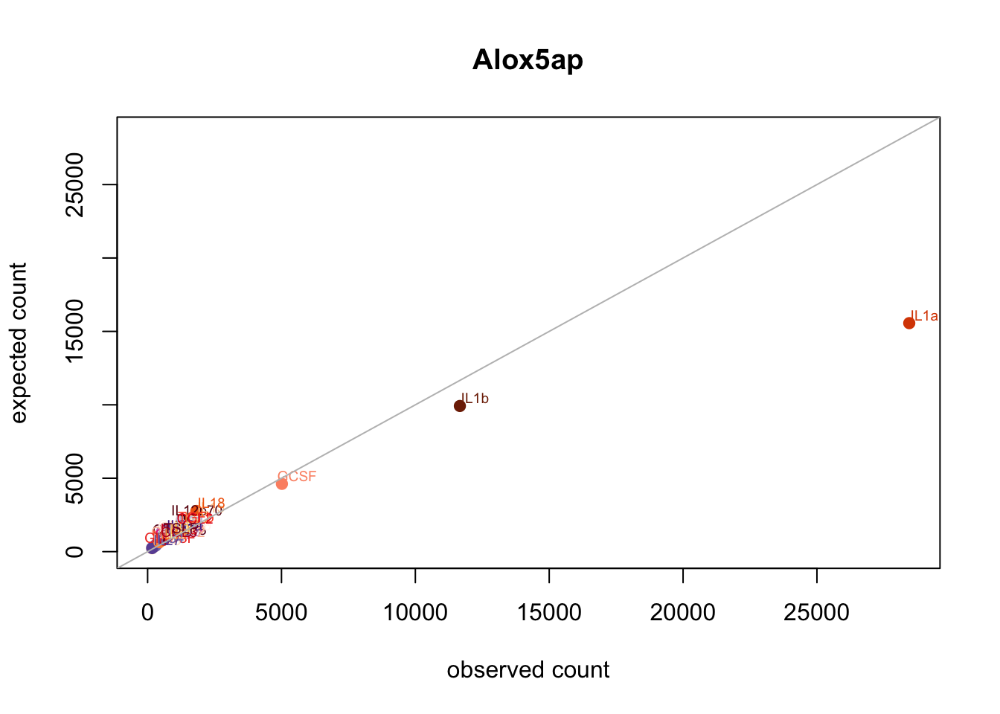
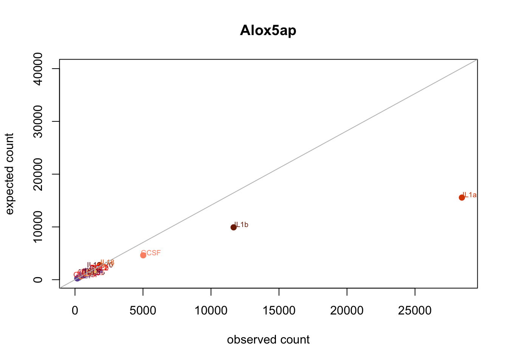

Last updated: 2021-04-29
Checks: 7 0
Knit directory: poisson_mash_sc/
This reproducible R Markdown analysis was created with workflowr (version 1.6.2). The Checks tab describes the reproducibility checks that were applied when the results were created. The Past versions tab lists the development history.
Great! Since the R Markdown file has been committed to the Git repository, you know the exact version of the code that produced these results.
Great job! The global environment was empty. Objects defined in the global environment can affect the analysis in your R Markdown file in unknown ways. For reproduciblity it’s best to always run the code in an empty environment.
The command set.seed(20210330) was run prior to running the code in the R Markdown file. Setting a seed ensures that any results that rely on randomness, e.g. subsampling or permutations, are reproducible.
Great job! Recording the operating system, R version, and package versions is critical for reproducibility.
Nice! There were no cached chunks for this analysis, so you can be confident that you successfully produced the results during this run.
Great job! Using relative paths to the files within your workflowr project makes it easier to run your code on other machines.
Great! You are using Git for version control. Tracking code development and connecting the code version to the results is critical for reproducibility.
The results in this page were generated with repository version 6356a56. See the Past versions tab to see a history of the changes made to the R Markdown and HTML files.
Note that you need to be careful to ensure that all relevant files for the analysis have been committed to Git prior to generating the results (you can use wflow_publish or wflow_git_commit). workflowr only checks the R Markdown file, but you know if there are other scripts or data files that it depends on. Below is the status of the Git repository when the results were generated:
Ignored files:
Ignored: .DS_Store
Ignored: .Rhistory
Ignored: analysis/.DS_Store
Ignored: output/.DS_Store
Untracked files:
Untracked: code/plot_by_gene.R
Untracked: code/plot_by_gene_v2.R
Unstaged changes:
Deleted: analysis/application_Ly6C+.Rmd
Deleted: analysis/application_Ly6C-.Rmd
Deleted: output/Report_B_cells.html
Deleted: output/Report_Dendritic_cells.html
Deleted: output/Report_Ly6C_neg_monocytes.html
Deleted: output/Report_Ly6C_pos_monocytes.html
Note that any generated files, e.g. HTML, png, CSS, etc., are not included in this status report because it is ok for generated content to have uncommitted changes.
These are the previous versions of the repository in which changes were made to the R Markdown (analysis/Alox5ap.Rmd) and HTML (docs/Alox5ap.html) files. If you’ve configured a remote Git repository (see ?wflow_git_remote), click on the hyperlinks in the table below to view the files as they were in that past version.
| File | Version | Author | Date | Message |
|---|---|---|---|---|
| Rmd | 6356a56 | yushaliu | 2021-04-29 | minor edits |
| html | 00729a1 | yushaliu | 2021-04-28 | Build site. |
| Rmd | e2ec4aa | yushaliu | 2021-04-28 | update reference line in scatter plot |
| html | e7ad940 | yushaliu | 2021-04-28 | Build site. |
| Rmd | 862e95d | yushaliu | 2021-04-28 | inconsistency |
Suppose there are \(j=1, \dots, J\) genes and \(i=1, \dots, N\) cells. The observed single cell count matrix \(Y\) is \(N \times J\), with its \((i, j)\) element \(Y_{ij}\) denoting the count of gene \(j\) in cell \(i\).
We assume that the \(N\) cells come from \(r=1, \dots, R\) conditions, with \(n_r\) cells (indexed by \(\mathcal{S}_r \subset \{1, \dots, N\}\)) coming from condition \(r\). To compare expression levels across multiple conditions, we collapse the single cell count matrix \(Y\) into a condition level count matrix \(X\), which is a \(J \times R\) matrix with its \((j, r)\) element \(X_{jr} = \sum_{i \in \mathcal{S}_r} Y_{ij}\).
Let \(s_i\) denote the size factor of cell \(i\), which can be calculated by taking the sum (or equivalently, mean) of counts over all genes in cell \(i\), or using other more robust methods. Let \(s_r = \sum_{i \in \mathcal{S}_r} s_i\) denote the size factor of condition \(r\).
Ignoring the random effect term and unwanted variation for now, we assume the following model on collapsed data \(X\): \[\begin{align} (1). \quad\quad & X_{jr} \; \sim Pois (s_r \lambda_{jr}), \\ (2). \quad\quad & \log \left(\lambda_{jr} \right) \; = \tilde{\beta}_{jr} = \mu_j + \beta_{jr}. \\ \end{align}\]
Here \(\lambda_{jr}\) is a gene-specific, condition-specific intensity parameter, \(s_r\) is condition-specific and accounts for different sequencing depths across conditions. We decompose \(\log(\lambda_{jr})\) for gene \(j\) and condition \(r\) into 2 parts: (i) \(\mu_j\) which models the gene-specific underlying mean shared by all conditions, (ii) \(\beta_{jr}\) which models the gene-specific, condition-specific effect.
Given Eq(1), the MLE estimate of \(\lambda_{jr}\) is \(\hat{\lambda}_{jr} = \frac{X_{jr}}{s_r}\). Assuming \(\lambda_{jr} = \lambda_j\) for \(\forall \; r\), the MLE estimate of \(\lambda_j\) is \(\hat{\lambda}_j = \frac{\sum_r X_{jr}}{\sum_r s_r}\). Therefore, the log-fold-change seen from the scatter plot is: \[\begin{align} (3). \quad\quad \log(\frac{\hat{\lambda}_{jr}}{\hat{\lambda}_j}) = \log(\frac{X_{jr}/s_r}{\sum_r X_{jr}/ \sum_r s_r}) = \log(\frac{X_{jr}}{(\sum_r X_{jr}) \frac{s_r}{\sum_r{s_r}}}) = \log(\frac{\text{observed}}{\text{expected}}). \end{align}\]
Given the log-linear model Eq(2), the log-fold-change between condition \(r\) and the average is: \[\begin{align} (4). \quad\quad \hat{\beta}_{jr} - \frac{1}{R}\sum_r\hat{\beta}_{jr} = \hat{\tilde{\beta}}_{jr} - \frac{1}{R}\sum_r \hat{\tilde{\beta}}_{jr} = \log(\hat{\lambda}_{jr}) - \frac{1}{R}\sum_r \log(\hat{\lambda}_{jr}) \neq \log(\hat{\lambda}_{jr}) - \log(\hat{\lambda}_j), \end{align}\] since \(\frac{1}{R}\sum_r \log(\hat{\lambda}_{jr}) \neq \log(\hat{\lambda}_j)\) unless \(\frac{X_{jr}}{s_r}\) is the same for all \(r\). This explains why the log-fold-change suggested by the scatter plot is different from the estimate of \(\beta_{jr} - \frac{1}{R}\sum_r\beta_{jr}\).
cols.trt <- readRDS("../applications_sc/B_cells/condition_colors.Rds")
trts <- names(cols.trt)
### swap the color code of IL1b and IL3 for clearer display of IL1b
cols.trt2 <- cols.trt
cols.trt2[which(trts=="IL1b")] <- cols.trt[which(trts=="IL3")]
cols.trt2[which(trts=="IL3")] <- cols.trt[which(trts=="IL1b")]
cols.trt <- cols.trt2
### load in condition-level count data
data <- readRDS("../applications_sc/Neutrophils/data_jr.Rds")
data.jr <- data$data.jr
idx.gene <- which(rownames(data.jr)=="Alox5ap")
x <- data.jr[idx.gene,]
s <- data$sloglambda <- log(sum(x)/sum(s))
loglambda.jr <- log(x/s)
lfc1 <- loglambda.jr - loglambda
names(lfc1) <- paste0(trts, "-mean")
# log fold change
round(lfc1, 3) Ctrl_2-mean CCL20-mean CXCL1-mean CCL22-mean CXCL5-mean CCL11-mean
-0.428 -0.356 -0.329 -0.411 -0.395 -0.320
CCL4-mean CCL17-mean CCL5-mean CXCL13-mean CXCL10-mean CXCL9-mean
-0.499 -0.307 -0.408 -0.412 -0.439 -0.406
CXCL12-mean GCSF-mean MCSF-mean GMCSF-mean IFNg-mean IL10-mean
-0.335 0.083 -0.396 -0.362 -0.599 -0.331
IL12p70-mean IL17a-mean IL13-mean IL15-mean IL17f-mean IL22-mean
-0.523 -0.341 -0.315 -0.305 -0.349 -0.303
IL18-mean IL1a-mean IL2-mean IL3-mean IL1b-mean IL23-mean
-0.419 0.603 -0.517 -0.400 0.162 -0.347
IL21-mean IL33-mean IL25-mean IL34-mean IL27-mean IL36a-mean
-0.355 -0.403 -0.469 -0.323 -0.372 -0.409
IL4-mean IL6-mean IL5-mean IL7-mean IL9-mean IL11-mean
-0.401 -0.333 -0.380 -0.375 -0.427 -0.398
TGFb-mean CCL2-mean CCL3-mean TSLP-mean
-0.378 -0.362 -0.302 -0.440 # scatter plots comparing observed and expected counts for each treatment
data.scatter <- data.frame(trt=trts, observed=x, expected=sum(x)*s/sum(s))
par(mfrow=c(1,1))
xmin <- pmin(min(c(data.scatter$observed, data.scatter$expected)) - 5, 0)
xmax <- max(c(data.scatter$observed, data.scatter$expected)) + 10
plot(data.scatter$observed, data.scatter$expected, col=cols.trt, pch=19, xlim=c(xmin, xmax), ylim=c(xmin, xmax),
xlab="observed count", ylab="expected count", main="Alox5ap")
text(x=data.scatter$observed + (xmax-xmin)/50, y=data.scatter$expected + (xmax-xmin)/50, labels=trts, col=cols.trt, cex=0.6)
abline(a=0, b=1, col="gray")
| Version | Author | Date |
|---|---|---|
| e7ad940 | yushaliu | 2021-04-28 |
lfc2 <- loglambda.jr - mean(loglambda.jr)
names(lfc2) <- paste0(trts, "-mean")
# log fold change
round(lfc2, 3) Ctrl_2-mean CCL20-mean CXCL1-mean CCL22-mean CXCL5-mean CCL11-mean
-0.084 -0.011 0.016 -0.067 -0.051 0.024
CCL4-mean CCL17-mean CCL5-mean CXCL13-mean CXCL10-mean CXCL9-mean
-0.155 0.037 -0.064 -0.068 -0.094 -0.062
CXCL12-mean GCSF-mean MCSF-mean GMCSF-mean IFNg-mean IL10-mean
0.009 0.427 -0.052 -0.018 -0.254 0.013
IL12p70-mean IL17a-mean IL13-mean IL15-mean IL17f-mean IL22-mean
-0.179 0.003 0.029 0.039 -0.005 0.041
IL18-mean IL1a-mean IL2-mean IL3-mean IL1b-mean IL23-mean
-0.075 0.947 -0.173 -0.055 0.506 -0.003
IL21-mean IL33-mean IL25-mean IL34-mean IL27-mean IL36a-mean
-0.011 -0.059 -0.125 0.021 -0.028 -0.065
IL4-mean IL6-mean IL5-mean IL7-mean IL9-mean IL11-mean
-0.057 0.011 -0.036 -0.031 -0.083 -0.054
TGFb-mean CCL2-mean CCL3-mean TSLP-mean
-0.034 -0.018 0.042 -0.096 # load in glm fit with poisson link
res.glm <- readRDS("../applications_sc/Neutrophils/glm_poisson.Rds")
round(res.glm$est.pre.shrink[idx.gene,], 3) Ctrl_2-mean CCL20-mean CXCL1-mean CCL22-mean CXCL5-mean CCL11-mean
-0.084 -0.011 0.016 -0.067 -0.051 0.024
CCL4-mean CCL17-mean CCL5-mean CXCL13-mean CXCL10-mean CXCL9-mean
-0.155 0.037 -0.064 -0.068 -0.094 -0.062
CXCL12-mean GCSF-mean MCSF-mean GMCSF-mean IFNg-mean IL10-mean
0.009 0.427 -0.052 -0.018 -0.254 0.013
IL12p70-mean IL17a-mean IL13-mean IL15-mean IL17f-mean IL22-mean
-0.179 0.003 0.029 0.039 -0.005 0.041
IL18-mean IL1a-mean IL2-mean IL3-mean IL1b-mean IL23-mean
-0.075 0.947 -0.173 -0.055 0.506 -0.003
IL21-mean IL33-mean IL25-mean IL34-mean IL27-mean IL36a-mean
-0.011 -0.059 -0.125 0.021 -0.028 -0.065
IL4-mean IL6-mean IL5-mean IL7-mean IL9-mean IL11-mean
-0.057 0.011 -0.036 -0.031 -0.083 -0.054
TGFb-mean CCL2-mean CCL3-mean TSLP-mean
-0.034 -0.018 0.042 -0.096 # load in poisson mash without ruv
res.gene <- readRDS("../applications_sc/Neutrophils/poisson_mash_no_ruv/Alox5ap.Rds")
round(res.gene$PosteriorMean, 3) Ctrl_2-mean CCL20-mean CXCL1-mean CCL22-mean CXCL5-mean CCL11-mean
-0.117 0.024 0.028 -0.025 -0.007 0.017
CCL4-mean CCL17-mean CCL5-mean CXCL13-mean CXCL10-mean CXCL9-mean
-0.123 0.087 -0.076 -0.014 -0.098 -0.022
CXCL12-mean GCSF-mean MCSF-mean GMCSF-mean IFNg-mean IL10-mean
0.005 0.459 -0.060 -0.003 -0.202 -0.034
IL12p70-mean IL17a-mean IL13-mean IL15-mean IL17f-mean IL22-mean
-0.218 0.010 0.051 0.029 -0.018 0.033
IL18-mean IL1a-mean IL2-mean IL3-mean IL1b-mean IL23-mean
-0.084 0.897 -0.158 -0.073 0.535 -0.013
IL21-mean IL33-mean IL25-mean IL34-mean IL27-mean IL36a-mean
-0.004 -0.107 -0.182 -0.017 -0.125 -0.095
IL4-mean IL6-mean IL5-mean IL7-mean IL9-mean IL11-mean
-0.012 -0.013 -0.009 -0.063 0.002 -0.070
TGFb-mean CCL2-mean CCL3-mean TSLP-mean
-0.043 -0.074 0.056 -0.075 As can be seen above, the estimates of log-fold-change are highly consistent between
1. \(\hat{\beta}_{jr} - \frac{1}{R}\sum_r\hat{\beta}_{jr}\) given by Eq(4);
2. estimate of \(\beta_{jr} -\frac{1}{R}\sum_r\beta_{jr}\) based on GLM fit to the cell-level count data with Poisson link;
3. posterior mean of \(\beta_{jr} -\frac{1}{R}\sum_r\beta_{jr}\) given by Poisson mash without ruv.
Let \(c_j = \log(\hat{\lambda}_{j}) - \frac{1}{R}\sum_r\log(\hat{\lambda}_{jr})\), and \(\tilde{X}_{jr} = (\sum_r X_{jr}) \frac{s_r}{\sum_r{s_r}}\), i.e., the expected count of \(X_{jr}\) in the scatter plot. Following Eqs(3)-(4), we have \[\begin{align} (5). \quad\quad \log(\frac{\tilde{X}_{jr}}{X_{jr}}) = \log(\hat{\lambda}_j) - \log(\hat{\lambda}_{jr}) = c_j - \log(\hat{\lambda}_{jr}) + \frac{1}{R}\sum_r\log(\hat{\lambda}_{jr}) = c_j - \hat{\beta}_{jr} + \frac{1}{R}\sum_r\hat{\beta}_{jr}. \\ \end{align}\]
Assuming \(\beta_{jr} - \frac{1}{R}\sum_r\beta_{jr}=0\) for \(r\), the updated reference line in the scatter plot should be \[\begin{align} (6). \quad\quad Y = X\exp(c_j).\\ \end{align}\]
# c.j for Alox5ap
c.j <- loglambda - mean(loglambda.jr)
c.j[1] 0.3441261# scatter plots comparing observed and expected counts for each treatment
xmin <- pmin(min(c(data.scatter$observed, data.scatter$expected)) - 5, 0)
xmax <- max(c(data.scatter$observed, data.scatter$expected)) + 10
plot(data.scatter$observed, data.scatter$expected, col=cols.trt, pch=19, xlim=c(xmin, xmax), ylim=exp(c.j)*c(xmin, xmax),
xlab="observed count", ylab="expected count", main="Alox5ap")
text(x=data.scatter$observed + (xmax-xmin)/50, y=data.scatter$expected + (xmax-xmin)/50, labels=trts, col=cols.trt, cex=0.6)
abline(a=0, b=exp(c.j), col="gray")
| Version | Author | Date |
|---|---|---|
| 00729a1 | yushaliu | 2021-04-28 |
sessionInfo()R version 3.6.2 (2019-12-12)
Platform: x86_64-apple-darwin15.6.0 (64-bit)
Running under: macOS 10.16
Matrix products: default
BLAS: /Library/Frameworks/R.framework/Versions/3.6/Resources/lib/libRblas.0.dylib
LAPACK: /Library/Frameworks/R.framework/Versions/3.6/Resources/lib/libRlapack.dylib
locale:
[1] en_US.UTF-8/en_US.UTF-8/en_US.UTF-8/C/en_US.UTF-8/en_US.UTF-8
attached base packages:
[1] stats graphics grDevices utils datasets methods base
other attached packages:
[1] workflowr_1.6.2
loaded via a namespace (and not attached):
[1] Rcpp_1.0.6 rprojroot_2.0.2 digest_0.6.27 later_1.0.0
[5] R6_2.5.0 git2r_0.27.1 magrittr_2.0.1 evaluate_0.14
[9] stringi_1.4.6 rlang_0.4.10 fs_1.4.1 promises_1.1.0
[13] whisker_0.4 rmarkdown_2.3 tools_3.6.2 stringr_1.4.0
[17] glue_1.4.2 httpuv_1.5.2 xfun_0.17 yaml_2.2.1
[21] compiler_3.6.2 htmltools_0.4.0 knitr_1.30